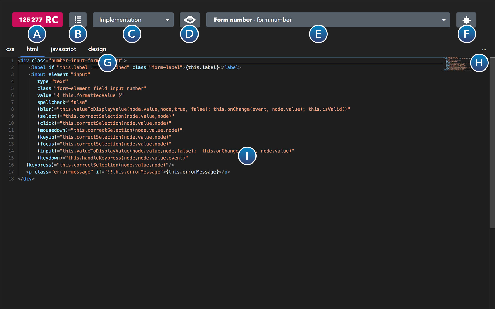

RC RESOURCE MANAGER - Overview
Here you find an easy overview of all functions the RC RESOURCE MANAGER provides for you.
A: RC menu
In this menu you find general settings and management functions for your account and server. The number you see left to the RC-logo is the number of RC you have left in your account (20 RC are 1 USD).
- Current server name / choose server
Here you find the name of the server you are connected to. You can click on this menuitem to login into one of your servers. - Tasks
Earn money by accomplishing tasks for other users. It's mostly about programming in PHP, JavaScript, HTML and CSS. When you earned more than 50 USD we can pay you the amount to your PayPal or bank account, or you can spend the earned RC's to upgrade your server to have more traffic or space. - Editor home
With this function you can go to the Editors homesite, where you find the latest news about the RC RESOURCE MANAGER. - Website
Go to the official RC website, where you find descriptions about our products and services. - Your servers
Get a list of all your servers. See your username, password, login to phpMyAdmin, upgrade your servers or buy new servers. - Account
See your current account (username, mail, firstname, lastname). Here you can logout. - Your skills
Please check all the skills, where you have some knowledge. With these we can optimize the tasks we offer you, to earn money. - Your tasks
See all the tasks for your own projects (within the server you are connected with). - Tutorials
Learn everything you need to know to work with our products. Including help for creating dynamic internet sites with RC RENDER HTML, how to get data from the database, how to use the RC RESOURCE MANAGER, and much more. - Support
Do you have questions to one of our products or services? Do not hesitate to contact us at any time. Our friendly staff will guide you to solve your problem as quickly as possible. - Buy RC
Buy RC's to buy new servers, upgrade your servers or outsource work. - Logout
Logout from your current account (scroll to see it).
B: The resource menu
In the resource menu you find all the functions to manage your recoures, like adding, deleting, submitting, searching and archiving resources.
- Add Resource...
Add a resource to your server. A resource can be anything like- Tag (HTML, CSS, JavaScript, PHP, ...)
A tag is a package which can contain like a custom HTML-tag (which is described in the RC RENDER HTML tutorial), but can also contain PHP to deliver data to your tag. - Webservice
A webservice is just a PHP file, which can for example deliver data form a database. - HTML Tag
A HTML tag is a definition (documentation) of a standard HTML tag, or a tag which is programmed in another framework, like Angular. - Object (definition)
An object is a generic resource, which can be used to define data used for a form, for example. - Database table
You can define here a database table and automatically create this on your database. You can manage who can add, edit or delete data form this database. - Validator
A validator is a type to introduce new kinds of checks for data. There are already a lot of validators predefined, like for email, custom checks with RegEx, etc. - PHP Library
A PHP library can be used to create functions or classes, which you can include in other resources.
- Tag (HTML, CSS, JavaScript, PHP, ...)
- Delete Resource...
If you no longer need a resource, you can delete it with this function. - Create Project...
Create multiple projects within your server to group your resources. - Open Project...
When you open a project, you see all the files in your project when you click on the "Resource Finder" (E). - Search...
Searches all your resources within your server, which are managed by the RESOURCE MANAGER. - Fullscreen
Displays the RESOURCE MANAGER in fullscreen mode. In this mode you will not see your tabs. - Archive
Archive your resource. - Clear cache
Clears the resource cache, if you have issues not seeing the updated version.
C: The view menu
In the view menu you find all the possible options to edit the currently selected resource (E).
- Overview
Get a complete overview for this resource. You can see the title, documentation, version, type, project, parameters, license, etc. - Config
In the config section you can edit the title, name, documentation, defaults, vendor, version, extends (base resource), type, license, project, allowed subitems (for tags), etc. - Implementation
In the implementation view, you can program your tags and webservices with HTML, CSS, JavaScript and PHP. You have a code editor with intelligent code completion, which helps you to write and update your code. - Parameters
Here you enter your parameters, which is for all resource types the same. These are the main parameters to call your resource. So for a tag, it would be the parameters for your HTML tag, the parameters for your webservice, the fields of your form (definition), the columns of your database table, etc. When you want to preview your tag, just click on the "preview with settings" (F), which will automatically generate a form to preview your tag or test your webservice, etc. - Dependencies
All your resources can have dependencies. These are the resources that are needed to run your tag, your webservice, etc. These dependencies will be loaded prior to your resource. For a webservice you can add library resources (with functions you need), for a tag you can add other tags you need, etc. - View
View your resources. When you have a tag, you can watch the tag in a HTML frame. A database table type will for example just list all the items in your table. For all the resource types, you get a suitable preview. - Design
Instead of writing HTML-code, you can easily define your layout in the design section. There you can add all your tags you want to display and the Resource Manger will automatically generate suitable forms for each resource (defined in the parameters section). - Ratings
Here you see all the ratings of a shared resource. Ratings are a way of telling other users if you like the resource or not (rate with 1 to 5 stars and write a comment). Ratings are useful for shared resources, or resources you downloaded from other users. - Tasks
The task section helps you to outsource complicated programming work. You have an idea for a tag or a webservice? You want to optimize an existing resource? Just tell us how much you want to spend, and we will try to find a worker for you! Starting from 20 RC (1 USD), you can already outsource work. The resource manager automatically offers this work to other users and each task will also be reviewed by one of our workers. - To-do list
The to-do list helps you to remind what kind of work is still needed for the resource. Here you can enter your ideas. These to-dos are only visible to you (tasks are public). When you want to have a to-do outsourced, you can convert it into a task easily. - Debug
Do you want to test your component? Here you can see a preview of the resource (like in View mode), but with more information. In a tag for example, you see the events fired and you can modify the parameters. - Access Control
Here you can control who can see your tag, who can call your webservice, who can update data in your database table, etc.
D: View button
If you just want to have a short preview of your current resource, you can click view. It will automatically switch to view in the "View menu" (C) and displays a button to go back to your previous view.
E: Resource Finder
When you click the resource finder, you see a list of all your resources (tags, webservices, tables, libraries, etc.) in your current project. You can type a search text, and it will search through all your resources (search by name and title). You can click on a resource to open it.
F: View with parameters
Preview your resources (see your tags, test your webservices, etc.). It will display an automatically generated form for this resource (see parameters tag).
G: Implementation tabs (implementation view only)
Here you see all your tabs (like HTML, JavaScript, PHP, CSS, etc.). You can cick on one tab to see the code in the code-editor (I).
H: Implementation tabs menu (implementation view only)
Add tabs (like HTML, CSS, JavaScript or PHP).
I: Content view
Here you see the content of your resource. In the screenshot example, you see the content of the implementation tab (code editor).